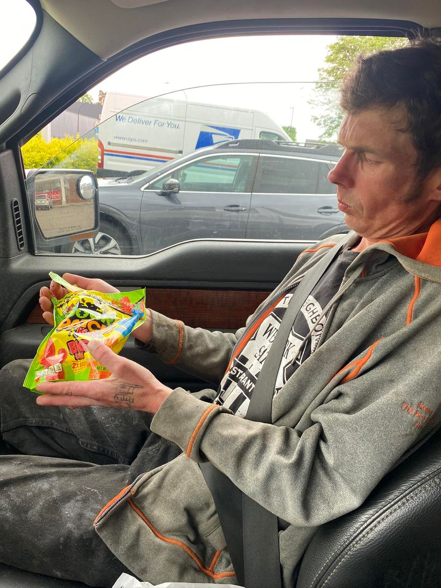

Mobile uploads
This is Kenny.
He’s a Houseless friend of mine and has been so for years.
I had just paid him $100 for doing some roofing work for me. He’s a great roofer.
When you hand $100 to a homeless person I would imagine you’d have some preconceived ideas of what they would do with the money.
Well, the first thing he did is he treated himself to this bag of Sour Patch Kids. (If you haven’t tried these you really should. They are amazing.)
And probably much of the rest of his money will go to his guitar. He’s always working on it one way or another. There is a music store he frequents on Talmadge Road. They are really good to him. They let him play the guitars and all that stuff.
Will some of the money go into meth and pot? Probably. But definitely not most of it.
I’ve come to see meth as almost needed on the street. How else are you going to stay awake all night so people don’t steal your belongings?
I was at a truck stop last week. I noticed they were selling torch lighters. They are what you use to light a meth pipe. I’m quite sure the Flying J was selling drug paraphernalia so truckers can stay awake for those long overnight hauls.
Until we move into our higher selves, stop blanket judging people, and start trying to understand others, we will NEVER get out of the addictive rut of hate and prejudice that we have found ourselves in for probably all of human history.
We are addicted to hate and judgement. It is the most socially destructive drug you will ever find.
The first step to recovery is admitting you have a problem.
Hi. My name is Sage. I am addicted to hate and judgment. But I want to be better.